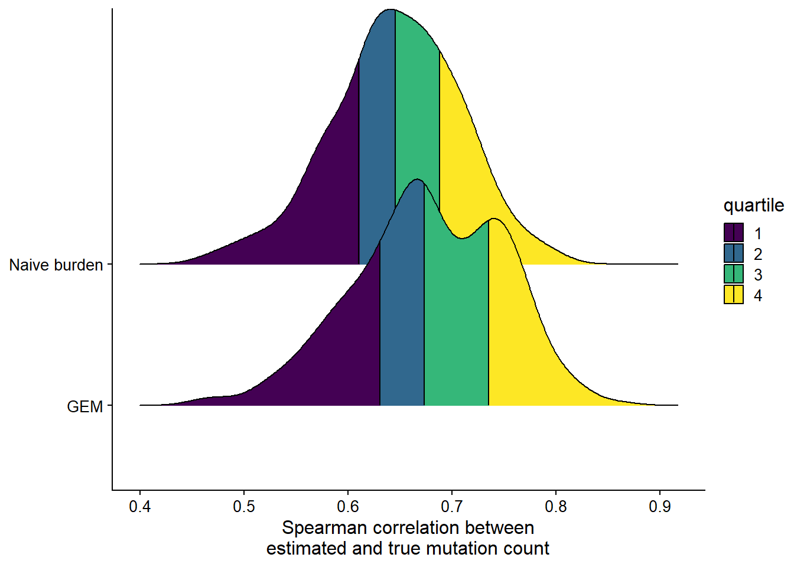

Evaluating GEM in simulation
Run simulation
sims = GEM:::wrap_simulation(nsims = 300, .progress = FALSE)
sims %>%
rename(
`GEM` = cor_gem,
`Naive burden` = cor_burden
) %>%
tidyr::pivot_longer(cols = everything(), names_to = "type", values_to = "cor") %>%
ggplot(., aes(y = type, x = cor, fill = factor(stat(quantile)))) +
stat_density_ridges(
geom = "density_ridges_gradient",
calc_ecdf = TRUE,
quantiles = 4,
quantile_lines = TRUE
) +
scale_fill_viridis_d(name = "quartile") +
theme_cowplot(font_size = 12) +
theme(axis.title.y = element_blank()) +
labs(x = "Spearman correlation between\nestimated and true mutation count")